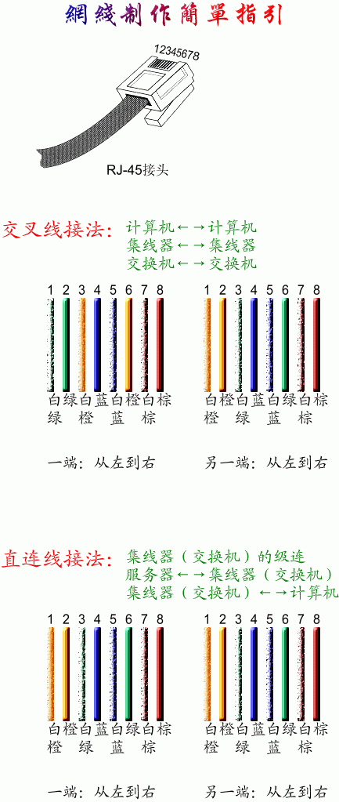

网线水晶头有两种接法，一种是直连互联法，一种是交叉互联法。交叉线的做法是：一头采用568A标准，一头采用568B标准。平行（直通）线的做法是：两头同为568A标准或568B标准。

网线有两种做法，一种是交叉线，一种是平行（直通）线 交叉线的做法是：一头采用568A标准，一头采用568B标准 平行（直通）线的做法是：两头同为568A标准或568B标准，（一般用到的都是568B平行（直通）线的做法） 568A标准：白绿 绿 白橙 蓝 白蓝 橙 白棕 棕 568B标准：白橙 橙 白绿 蓝 白蓝 绿 白棕 棕
©2021– by Joe